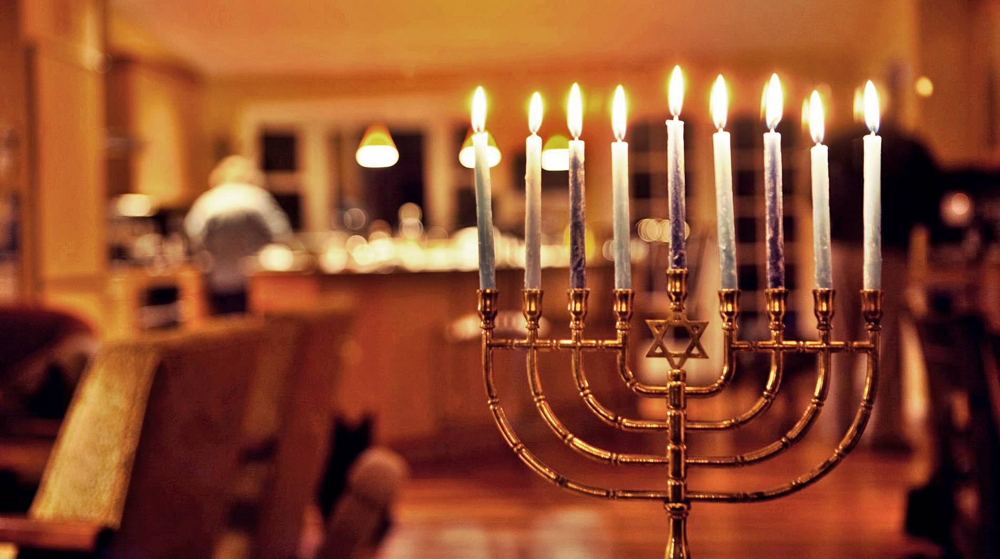

La Fiesta de la Dedicación y de las Luces

Hanukkah (o Jánuca) es la Fiesta de la Dedicación o de las Luces. Es una festividad registrada históricamente y mencionada en la Biblia (Juan 10:22). Conmemora la purificación y rededicación del Segundo Templo de Jerusalén por parte de los Macabeos en el siglo II a.C., tras liberarlo del dominio helénico. Durante este evento, una pequeña vasija de aceite puro para el candelabro (Menorá) que solo alcanzaba para un día, milagrosamente permaneció encendida durante 8 días consecutivos.